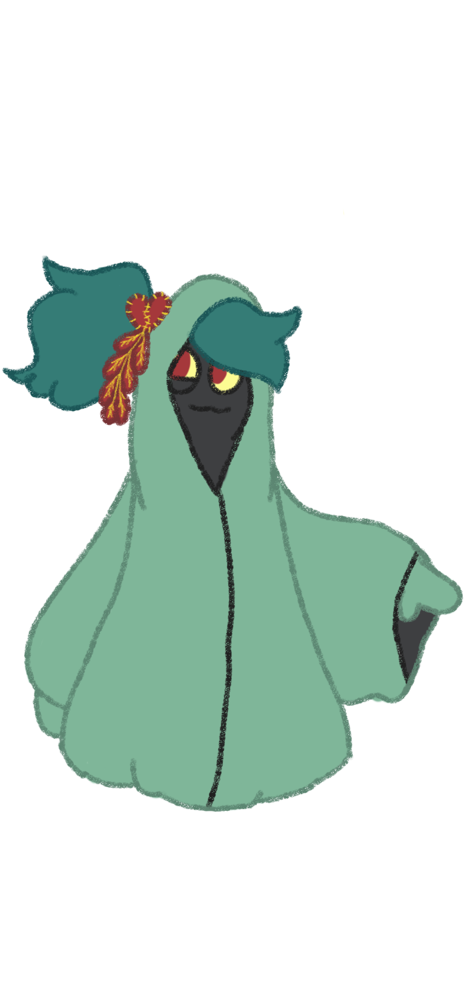

Catherine Ann MacDonald
Writer-Artist

Writer-Artist
The Hero of Phirn
Once upon a time, there existed a world unlike any other. One where fantasy and modern science worked together in tandem. However, our story takes place in a more fantastical setting, a mythical village located in the center of a mystical forest in the roots of a magic tree. That tree's name was Phirn: The Tree of Gifts. Long ago this tree was created by the goddess of nature long before the beginning of man. She bestowed it with the magical sap that could be used to heal the sick and make the weak powerful. But, knowing that this power could be used for evil, she created a new form of life to protect the tree. These magical spirits were called Frayer, a race of small, furry creatures that not only guarded the tree but took care of it. Frayers could also use magic like other spirits; however, only a select few were granted the privilege of being on the Magic Council. Those on the council had the most important job of all: maintaining the force field that protected the tree from outside interference.
These beings were crafted to spend their entire existence protecting Phirn, meaning these creatures never left the sanctuary of the village. That was the truth until an event occurred that forced one special Frayer out of his home in order to save it. That Frayer is our hero, Scout.
Scout was born unlike the others, for he was born without arms. When he emerged from the roots during the Harvest—an event that marked the beginning of new life in which newborn Frayers would emerge out of the tree's roots to begin life—the other Frayers looked at him in awe and terror. In their entire existence not one Frayer had emerged with a flaw, until that fateful day. Scout was taken before the council to discuss what to do with him. Some suggested sending him to rot as the guard that sat outside the field—the lowest-ranking job given to a Frayer—but one sorcerer objected and suggested that she take him in. That spellcaster was Misty Wistmith, the kindest and wisest in the entire council.
She took Scout in, gave him his name, and gifted him with a power of his very own. Not only did she give him his very own arms, but the ability to detach them and move them, plus other objects, without touching them. Equipped with these new gifts, Scout devoted himself to being Wistmith's assistant and promised to do the best he possibly could.
He lived up to his promise. Scout did whatever Wistmith needed him to do. However, life was not easy for him because the other Frayers saw him as an outcast and would constantly remind him of that fact whenever they got the chance. Scout's confidence suffered because of it, causing him to become anxious and not have faith in himself. Still, he continued to work for Wistmith, learning a variety of things along the way, such as magic and its history. Life was simple; every Frayer was satisfied with their role and Scout believed life would stay like this forever. But then again, none of them could have possibly imagined their entire existence would be threatened in the span of a day.
The day started off normal. Scout woke up early to prepare breakfast for Wistmith and himself. He made the usual—oatmeal with fresh fruit and tea. Today he had made some chamomile tea, the aroma of which filled the air.
"Mm-, smells wonderful," said Wistmith as she walked into the dining room. Scout gave her a small smile and began to serve her before serving himself. After cleaning up, Scout and Wistmith went on their daily stroll through the town. They did this because it was Wistmith's job to make sure everyone was doing their part in keeping the tree safe.
As they were talking to the head farmer, who took care of the food supply, they heard a shriek. Then, the guard who watched the barrier came running and screaming.
"Monster! Monster!" cried the guard as he ran towards the council hall.
Panic soon ensued—Frayers were running all around, some even barricading themselves in buildings. While this was going on, members of the magic council were running towards the field instead of away from it, including Scout and Wistmith. When they all arrived, they saw something quite shocking—a man in a mask standing just outside the barrier.
"It can't be," cried one of the council members in horror.
For you see, the council knew that man, and long ago Wistmith had told Scout about him as well. The man's name was Xander Zyphleth, a bounty hunter who worked for the most powerful witch doctor in existence, Alphys Dekar. She was once part of the most powerful group ever to walk the planet: The Eternals—an evil force led by the great Ogden Dovokaazonok.
Ogden was once the prince of the dragon kingdom, but when denied his right to the throne, went insane and hungry for power. During his conquest, he met four others who shared the same lust for power as he did. So they joined forces to bring the world to its knees. However, after Ogden was defeated by Roswell and his four pillars, the group split up and was only occasionally seen.
But now, standing before the village of Phirn, was a threat unseen in years. Soon after the entire council had gathered, Xander made a move and began to pull what looked like a charm from out of his long coat. The council stood at the ready but did not make a move—at least not until they knew exactly what they were up against.
Just then, he placed the amulet right against the field and began to chant something. The council finally made their move as well and began to chant a spell of their own to strengthen the barrier from Xander's attack. But the effort was wasted—after completing his chant, a hole appeared in the field, allowing him just enough space to walk through. The magic council tried, in vain, to hold him back, but their spells seemed to nearly bounce off him.
And by that time, it was too late—he had reached the tree. Every Frayer in the village looked out in pure terror at this sight—their sole purpose was to protect the tree, and it had just been invaded by an evil unlike any other.
The magic council retreated to the Great Hall to discuss what to do next. Every council member was summoned, including Wistmith—meaning Scout came along as well, despite not being invited. Frayers were already discussing among themselves when they arrived and sat down. Then a tall Frayer with a beard and ash brown fur walked to the front of a podium.
"Alright everyone settle down now, the discussion is about to begin!" he asserted in a deep voice. The hall instantly became quiet. That Frayer was the head of the council, known as Smokey Oaks, and one of the most powerful magic users in the hall.
"I'm sure I don't need to explain the situation," he stated. "What has occurred in the last hour has been most upsetting, but we need to figure out how to get this brute out of our sacred home!"
"We should use a curse to turn him into a flea!" cried one Frayer.
"No way! Let's set him aflame instead!" shouted another.
"Order, Order!" yelled Smokey as he banged a gavel. "Can we please get a smart idea!"
"We should get some help," replied Wistmith calmly. Everyone turned to her in surprise—even Smokey looked shocked.
"What exactly do you mean, Misty?" he inquired.
"I mean we should get help from the Druids of Etheria Keep," she answered.
The entire hall went quiet. No Frayer had ever been outside the village, so the suggestion of getting outside help was mind-boggling.
"Who do you expect to go on a journey like this?" Smokey asked.
"Anyone who is willing to volunteer," she replied. "So, is anyone willing to?"
Her question was met with silence—until someone yelled, "Why don't you have your assistant take the journey!"
Others began to agree, causing Scout to become anxious.
"That's a good idea," declared Smokey. "Let's have your little Scout complete this mission."
Scout was applauded—first they treated him like nothing, but when they needed something, now they took notice.
"C'mon, Scout, what do you say?" asked another Frayer sarcastically.
"Um, well I don't—" stuttered Scout, his face now bright red as he held back tears. Wistmith tried to comfort him while the others giggled.
"Order!" yelled Smokey. "Misty, your idea is all well and good, but there is no way any one of us could make the trip that far."
"I disagree," she responded bitterly.
"C'mon, even your little assistant couldn't agree with your plan," he sneered.
"I didn't say that!" cried Scout furiously, shocking everyone—including Wistmith.
"So, you do agree and are willing to go?" he pressed.
"I stand by her idea, but I'm not the right person for the job," Scout replied bluntly.
"Oh? Of course—who was I kidding, a burden like you could never do something like this," sneered Smokey.
Scout was appalled—even the head of the council mocked him. But Scout said something that flipped the whole argument on its head.
"Fine then! I will make the journey and prove to you I'm not just a burden!" he snarled.
The hall fell silent. Even Wistmith had never seen Scout so angry—he was usually very reserved.
"Fine then, it's settled. Meeting adjourned!" Smokey replied angrily.
When Scout and Wistmith arrived home, Scout was in shock. Why on earth did he agree to do something like this? But still, he said he would do it, so he began to pack for the journey ahead.
He packed essentials: food, water, a map, etc. Wistmith also lent Scout a hand.
"Here, you should take this with you," she said, handing him what looked like a gem encased in a glass sphere. "It should help you later in the forest."
"Thank you," he said solemnly. "Sorry for losing my temper back there."
"Oh, there's no need to worry," she giggled. "I'm glad you agreed. I trust you more than any member of the council to do this."
Scout was flattered and promised to make her proud.
They walked to the edge of the barrier, said their goodbyes, and hugged. Scout looked out at the unknown before him, sighed, and took his first steps out of the village.
He had been walking only a few hours, but it was already starting to get dark. Deciding to avoid walking exposed in the dark, he set up camp near a large oak tree. After building a small shelter, he ate some trail mix.
Then suddenly, a small grey creature jumped out of the bushes—a reptile-like being with bug legs. It lunged at him. Scout dodged, but the creature destroyed his shelter. When it turned toward him again, he carefully led it toward a bramble bush. Just as it charged, he used his ability to fling it into the bush.
By then, Scout was exhausted. He dug himself a small den, covered it with leaves, and slept.
In the morning, his back ached, but he didn't care. He looked at his map and compass and continued deeper into the forest. Days passed, until he came to a fork in the road. The fork wasn't on his map, which made him panic. One path was called Mythic Meadow—a peaceful-looking clearing—while the other was Poachers Pass, a place of traps and thieves. Poachers Pass was faster, so he took it carefully.
Soon, he heard growling. At first, he hid, but then realized it was a cry of pain. Following the sound, he found a manticore trapped in a massive snare. Though afraid, Scout helped free the beast using his powers.
"Thank you, kind sir," the manticore said, bowing.
Scout, startled, replied, "Oh—sorry, I've just never seen a creature like you before."
"I still wish to repay you," said the manticore.
"Actually," said Scout, "could you fly me to Etheria Keep?"
"Of course!" said the beast.
Scout climbed on, and the view from above took his breath away.
"Amazing, isn't it?" said the manticore.
"It is," replied Scout.
"I am Yorick. What's your name, savior?"
"Scout," he said.
They flew for two days, resting along the way. Scout learned Yorick had a wife and son—he'd been trapped while hunting food for them. When they reached the keep, they said goodbye and promised to meet again.
The keep looked more like a bustling market than a fortress. Scout searched for the Druids but found none. A statue revealed the truth: the Druids had long since left. Heartbroken, he sat beneath the statue.
"Are you alright?" asked a woman in a sweater.
"I'm having a day," he muttered.
He explained his failed quest.
"That's rough," she said. "But why didn't you use your magic to attack the man yourself?"
Scout thought. "I don't have the power to take him on by myself."
"Well, you could've at least scared him off," she replied.
He realized she was right.
Just then, the gem Wistmith gave him began to glow. Before he could react, he was teleported back to the village.
He ran to the tree and saw Xander filling a barrel with the tree's essence. Scout climbed a ledge and concentrated—causing the barrel and fountain to shake and burst. The essence formed a gooey creature that attacked Xander, driving him away.
The villagers cheered Scout's victory. Wistmith hugged him proudly.
"Good job, kiddo," she said.
Even Smokey approached. "I'm sorry I doubted you, Scout," he said. Scout hugged him too.
Afterward, Scout was made a member of the council—and given the title of Hero.
No longer an outcast, he was their savior. Though he couldn't take all the credit—he owed Yorick and the mysterious woman—he was happy knowing his village was peaceful once more.
Reflection
"Do you remember when she and I were dating?" my brother recalled while blowing smoke out of his mouth. I could barely comprehend the question as I was focused on my own cigarette, a much-needed break after the wild couple hours of drinking done at my party. I was getting married and this was my bachelor party, so why would my own brother drop this on me now?
"I don't, I just remember the two of you being friends."
It was a pretty obvious lie — I did know they were a thing for a time. He shifted his body toward me; he clearly knew I was being oblivious on purpose. My brother was always good at reading people, unlike me. It's something I try to keep out of my mind — my brother always got what he wanted as he was older. I was just the strange younger sibling.
"You really didn't know we were a thing? I thought you two would've talked about it by now."
He took another long puff of his cigarette, almost seeming confident, blowing out the smoke like he was pleased by something he said.
"I don't want her to have to explain her past choices. We are who we are now, and that's enough for me."
She really was a different person now — we both were. I'm not the kid who sat alone every day at lunch because I was into coding. I'm in a happy relationship with the love of my life whom I'm getting married to in a few days.
"Wow, my little brother is all grown up," he said, wiping a fake tear from his eye — and in the process accidentally putting some ashes into it.
"Hey, do you remember Michaela's party when we were in high school?" he remarked while trying to rub the ashes out. I couldn't for a moment; it was so long ago, and I've tried to put the memories of that godforsaken place out of my mind.
"You mean the one you got super drunk at and almost drowned?"
He was so reckless that night — I can't believe we're even related sometimes. The memory I had just unearthed seemed to please him in a way that confused me.
"Oh yeah, that did happen," he chuckled while taking another puff. "But I was actually referring to when we were doing truth or dare and she ended up making out with that guy from the football team. That was amazing. She's always been a big party girl — imagine what she and her girlfriends are doing right now, woof."
What a weird story. He looked extremely titillated with his large smile, but his eyes seemed sad. Why was he acting like this?
"I think I was sick and in the bathroom at that point."
Which was the truth — I was a pretty big lightweight back then, and the several slices of pizza surely didn't help.
"Right. Well, she's still the same when it comes to partying, is what I meant. Always doing wild things."
It seemed like he was trying to hide something — his tone was sharper than usual. Not only that, he seemed more fidgety than usual, moving his cigarette from hand to hand while talking.
"Well, she just likes to unwind after work — she does have a lot on her shoulders these days."
Again, the truth. She's a real estate agent and it's her job to make any house marketable even if it really isn't.
"I've never known anyone else who can down a keg like she can. You're a lucky one."
He always knew how to make a compliment sound strange.
"Thanks, I guess. Um, should we—"
"OH HEY, remember when she was arrested for public indecency and you had to go get her? Man, you looked like a disappointed parent!"
He gave a roaring chuckle that sounded almost like a cackle — or am I being paranoid?
I was caught off guard by his sudden interruption, but I did remember that. It wasn't the first time her late-night drinking led to something bad happening.
"She doesn't do it that much anymore. We agreed she would be more responsible."
The music in the bar seemed louder to me now and more welcoming than the conversation.
"Really? Then why was she completely out of it when she came to my place last week?"
My cigarette fell from my hands, my eyes immediately drawn to his face. He was almost giddy, like a kid telling on their sibling to get in good with their parents.
"Yeah, she came by and we just hung out — no need to worry about it."
Was that a lie? He was always good at lying. He seemed so sure about every word — it was hard to peg my brother, which was probably why he had trouble maintaining relationships.
"Anyway, let's head back. We've got to make the most out of your party — you won't be a bachelor for long."
He nudged me a bit before putting out his cigarette and heading back inside, leaving me there.
When was the last time she and I went on a date?
The Forest
Beep. Beep. Beep.
This droning noise woke the young girl from her unconscious state. The girl was named Lilith, a normal girl who went to school and lived with her parents like most people.
However, she found herself in a dark forest, alone.
"Hello?" she squeaked out, groggy and afraid.
"Is anyone there?" she called louder this time. Minutes passed — no answer.
Helplessness flooded her mind. The giant black trees surrounded her like bars on a jail cell, twisting in all directions, their thin branches reaching toward the sky.
She couldn't stay here much longer, so she followed the only path she could see — a dirt trail extending ahead.
Though terrified to leave the clearing, she knew help wasn't coming. As she walked, the path narrowed, and her trapped feeling grew worse. Her chest tightened. It was suffocating.
She stopped to re-center herself — deep breathing, like they taught at school during those mental health talks. In and out. Slowly, the trembling subsided and the pressure in her chest lightened.
Her mind drifted back to before she woke here — she remembered running from something, then a bright light. The beeping sound that had woken her was quieter now, but still there. She tried to follow it — when suddenly, a screeching moan pierced the air. It was close, and getting closer.
Lilith spun around frantically. Then she saw it — a tall, humanoid figure shuffling toward her. Its arms dragged along the ground, its clothes tattered — a torn sweater, polo, and jeans.
But the worst part was its face. Or rather, the lack of one.
She froze in terror. The thing stumbled faster, closing in. Finally, instinct took over — she ran off the path, crashing through brambles and brush. Thorns cut her legs but she didn't feel the pain.
She risked a glance back — mistake. It was following her, and faster than before.
She tripped. Her ankle caught in a root. The creature was gaining fast.
"Please! Just leave me alone!" she cried, tears streaming.
The creature stopped inches from her. Her pupils darted wildly; she couldn't move. It raised its long arms toward her neck.
"No!" she screamed.
Then — nothing.
Everything turned white.
Slowly, the bright light faded, revealing a pair of wings — dark gray with black tips.
They were beautiful… and somehow comforting.
"Are you alright?" a calm voice replaced the silence.
Lilith looked up — her savior wasn't human either. Black eyes. Black markings on their arms and face. A halo floated above their head. Two sickles hung at their sides.
Behind them, the corpse of the faceless creature.
"I'm… o-ok," she stammered.
The winged being knelt and cut the roots from her ankle. Helping her up, they stood tall — and Lilith could finally take in their eerie presence.
When another noise stirred, she screamed again, but the angel silenced her gently until the creature vanished into the woods.
"Th-thank y-you," she whispered. "Um… do you know where we are?"
"We are in Limbo," they said flatly.
"E-excuse me?"
"I assume you woke up here? Then that means something on Earth caused your soul to leave your body and end up here."
"What happened to me?"
"What do you remember?"
"I remember running… then a bright light… and beeping."
"Sounds like a textbook car accident to me," they replied bluntly, slinging their weapons across their back.
"What!" Lilith was stunned. A car accident? Was that possible?
"Listen," they said, turning to her. "People end up in Limbo because they have a tie binding them to life or death — or because they can't accept their own death. Either you died in that crash, or more likely, you're in a coma, lying in a hospital. That beeping sound? It's your life support."
She stood silent. It could be true. Maybe she really was in a coma.
"How do I wake up?" she asked, desperate.
"I could wake you," they said, "but once you die permanently, your soul will belong to me."
Her heart pounded. A deal with an angel? She thought that was only something demons did.
"Do we have a deal?" they asked, holding out their hand.
Lilith hesitated, then nodded. "Of course — as long as I get to leave."
Another flash of white enveloped her.
Beep. Beep. Beep.
Lilith woke in a hospital bed, surrounded by machines. She didn't remember the forest, or the angel, or Limbo.
But outside her window, hovering in the air, the same angel watched her silently. They knew she wouldn't remember.
For those who leave Limbo… forget they were ever there.

Catherine Ann MacDonald
© 2025